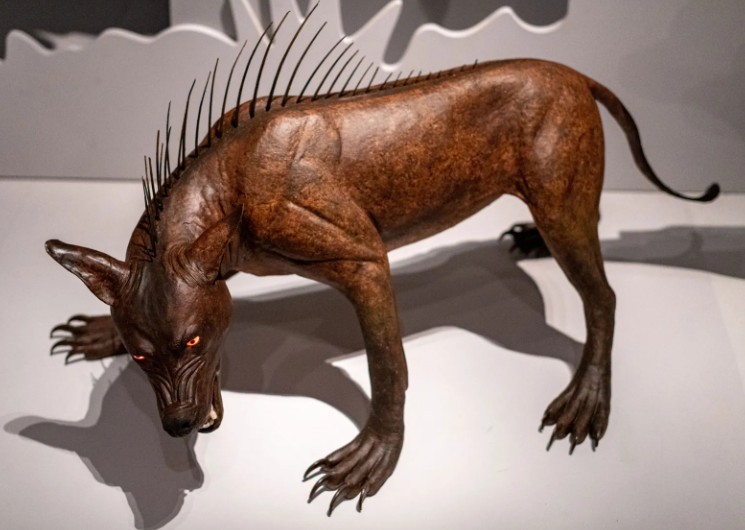

{% extends '_layout.html' %}
{% block title %}Cryptid Catalog | Encyclopedia{% endblock %}
{% block body %}
- BACK
- CHUPACABRA
- Type: Terrestrial

- The chupacabra or chupacabras (literally 'goat-sucker') is a legendary creature in the folklore of parts of the Americas, with its first purported sightings reported in Puerto Rico in 1995. The name comes from the animal's reported vampirism—the chupacabra is said to attack and drink the blood of livestock, including goats.
Physical descriptions of the creature vary, some describe it as reptilian and alien-like (in Puerto Rico and Latin America), generally as a heavy creature the size of a small bear with a row of spines reaching from the neck to the base of the tail. Others depict it as more dog-like (particularly in Southwestern United States).
Sightings have been reported in Puerto Rico since the 1970s, and this creature has since been reported as far north as Maine, as far south as Chile, and even outside the Americas in countries like Russia and Philippines.
In 1975, a series of livestock killings in the small town of Moca, Puerto Rico were attributed to el vampiro de Moca ('the vampire of Moca'). Initially, it was suspected that the killings were committed by a Satanic cult; later more killings were reported around the island, and many farms reported loss of animal life. Each of the animals was reported to have had its body bled dry through a series of small circular incisions.
The first reported attack eventually attributed to the actual chupacabras occurred in March 1995. Eight sheep were discovered dead in Puerto Rico, each with three puncture wounds in the chest area and reportedly completely drained of blood. A few months later, in August, an eyewitness named Madelyne Tolentino reported seeing the creature in the Puerto Rican town of Canóvanas, where as many as 150 farm animals and pets were reportedly killed.
{% endblock %}